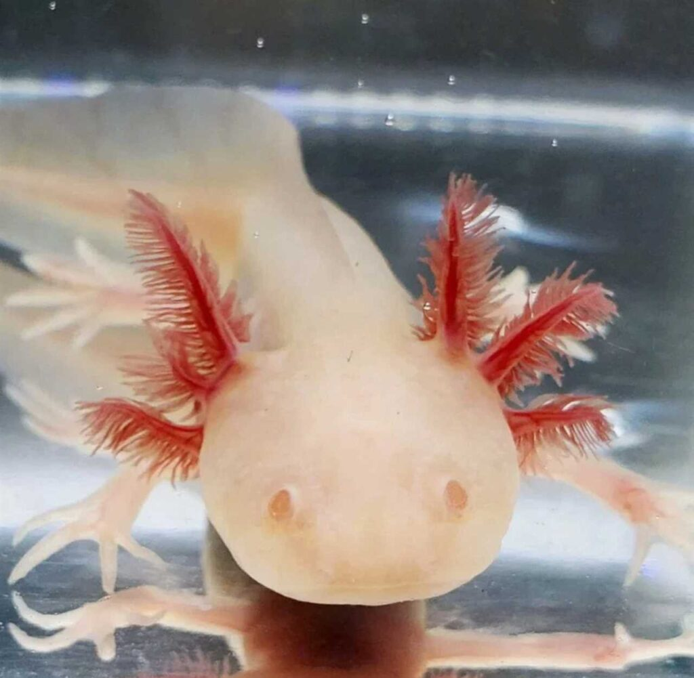
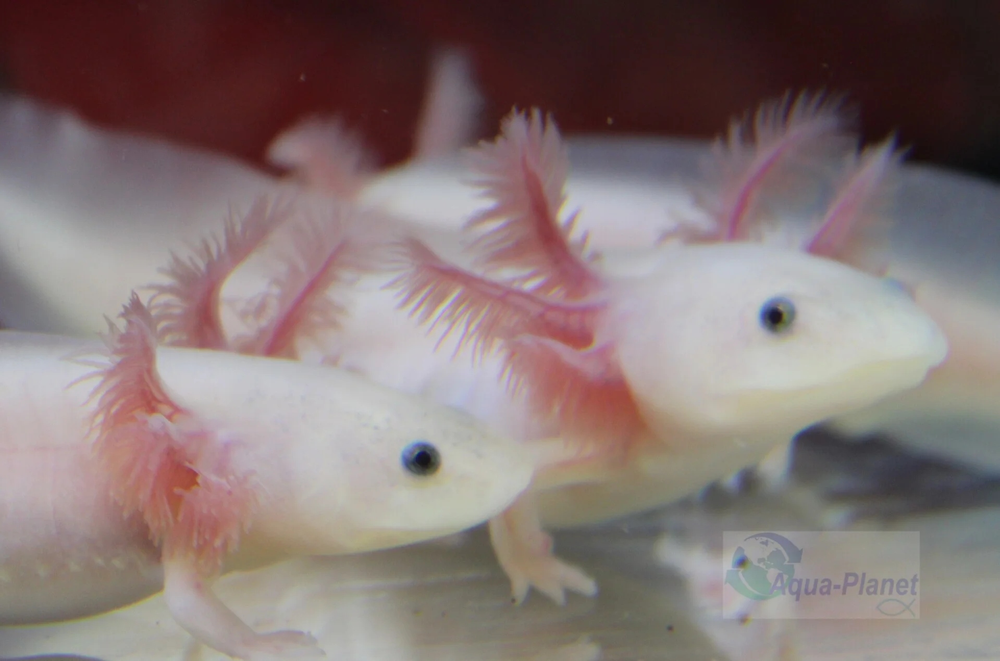
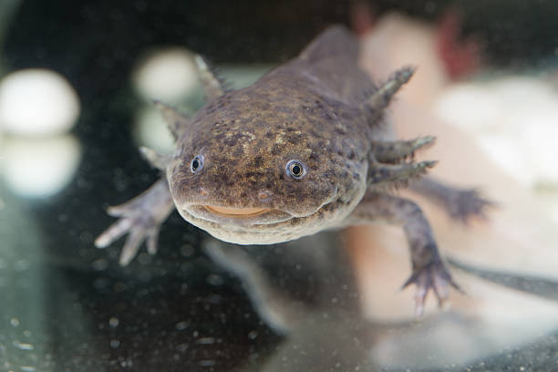
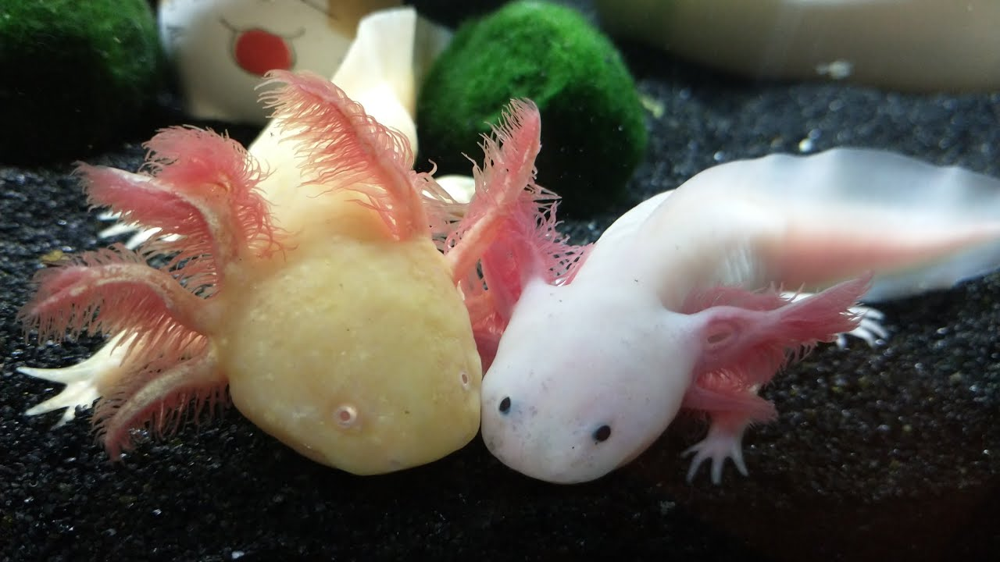
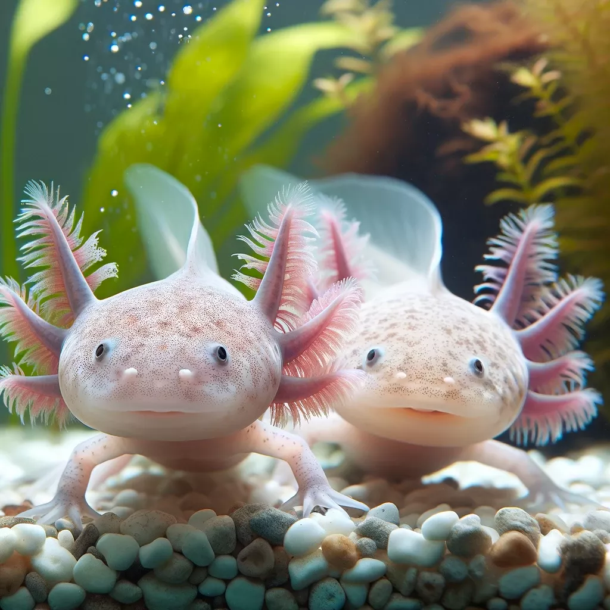
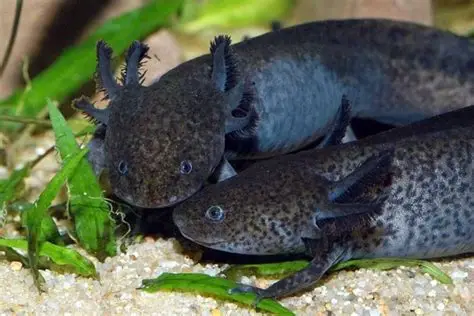

Mláďata


Plánované vrhy

Pár dvou albínů axolotlů
Očekávané vlastnosti: většina jedinců by měla být albínů.
Přidat se na čekací listinu
Pár dvou leucistických axolotlů
Očekávané vlastnosti: většina jedinců by měla být leucistická.
Přidat se na čekací listinu
Pár dvou melanoidních axolotlů
Očekávané vlastnosti: většina jedinců by měla být melanoidní.
Přidat se na čekací listinuCo je v ceně
Se zakoupením axolotla dostanete jeho očkovací pas.
Startovací balíček, ve kterém se nachází jídlo pro vašeho axolotla na jeden měsíc a filtr do akvária, na který je zvyklý.
A jako poslední nabízíme náš chovatelský servis.
Jak probíhá odběr u axolotla
1. Kontakt a domluva
Prvním krokem je nezávazný kontakt, při kterém se dozvíte vše potřebné o dostupných axolotlech. Společně probereme vaše představy, zkušenosti s chovem a podmínky, které můžete axolotlovi nabídnout. Poradíme také s přípravou akvária a vhodného prostředí.
2. Návštěva a záloha
Po předběžné domluvě si můžete axolotla osobně prohlédnout, seznámit se s jeho povahou a zjistit více o jeho dosavadním chovu. Pokud se rozhodnete pro konkrétního jedince, domluvíme podrobnosti odběru a případnou rezervační zálohu, která vám axolotla závazně rezervuje.
3. Odběr a následná podpora
Při samotném odběru dostanete všechny důležité informace o krmení, péči, aklimatizaci a správném transportu. Axolotla předáme v dobré kondici a připravíme vás na jeho první dny v novém domově. Ani předáním ale naše pomoc nekončí – v případě dotazů vám rádi poradíme i po odběru.
Často kladené otázky
Kolik axolotl stojí a jak probíhá platba?
Cena axolotla se může lišit podle jeho zbarvení, věku a dalších vlastností. Konkrétní cenu vám sdělíme při domluvě. Platbu je možné řešit při osobním odběru, případně po předchozí dohodě formou rezervační zálohy.
Je možné axolotla dopravit?
Upřednostňujeme osobní odběr, při kterém můžeme axolotla bezpečně předat a zároveň vám vysvětlit vše důležité k jeho převozu. Jiný způsob předání je možný pouze po individuální domluvě s ohledem na bezpečnost a pohodu zvířete.
Co budu potřebovat na první dny s axolotlem?
Nejdůležitější je mít předem připravené a správně zaběhnuté akvárium s odpovídající kvalitou a teplotou vody.